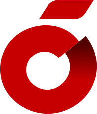
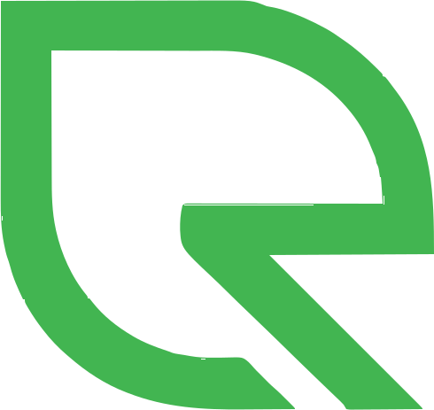

شرکت سیمان قاین (سهامی عام)
مدیر مالی
رئیس حسابداری
مدیر مالی / حسابدار ارشد
حسابدار با ۲۹ سال سابقهی حسابرسی، حسابداری صنعتی و مدیریت مالی، از حسابرس ارشد تا مدیر مالی یک شرکت سهامی عام.
خلاصهی حرفهای
مسیر حرفهای من از حسابرسی مستقل شروع شد و با حسابداری صنعتی و ریاست حسابداری، به مدیریت مالی شرکت سیمان قاین (سهامی عام) رسید. این مسیر هم نگاه کنترلی حسابرس را به من داده و هم شناخت عملیاتی واحد مالی یک شرکت تولیدی را.
با نرمافزارهای حسابداری رایج در ایران (هلو، همکاران سیستم و رایورز) و ابزارهای آفیس کار کردهام. اکنون آمادهام این تجربه را در نقش مدیر مالی یا حسابدار ارشد به یک سازمان بیاورم.
سابقهی کاری
جدیدترین سمت در بالا.
مدیر مالی
رئیس حسابداری
کارشناس حسابداری صنعتی
سرپرست حسابرسی
حسابرس ارشد
مهارتها و نرمافزارها

هلو
رایورزمدارک و گواهینامهها
کارشناسی حسابداری
دانشگاه آزاد یزد
شرایط همکاری
پذیرش همکاری بر اساس محل کار.
در این شهرها
در این شهرها
تماس